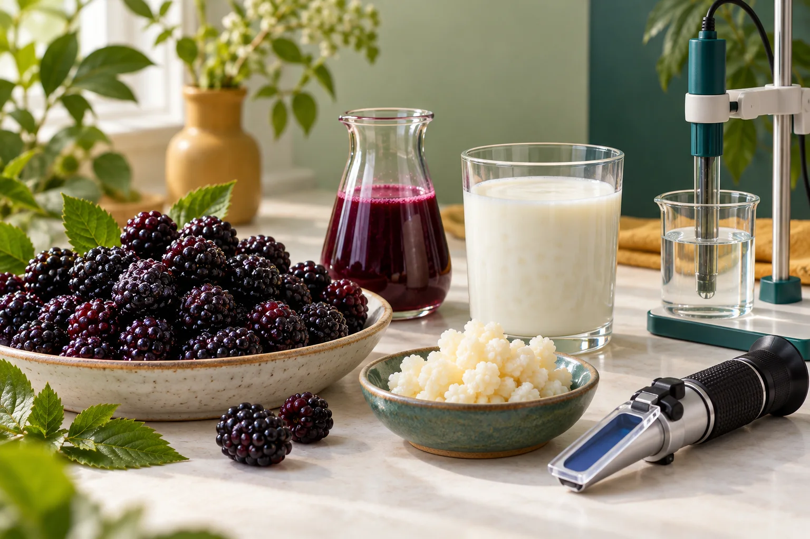
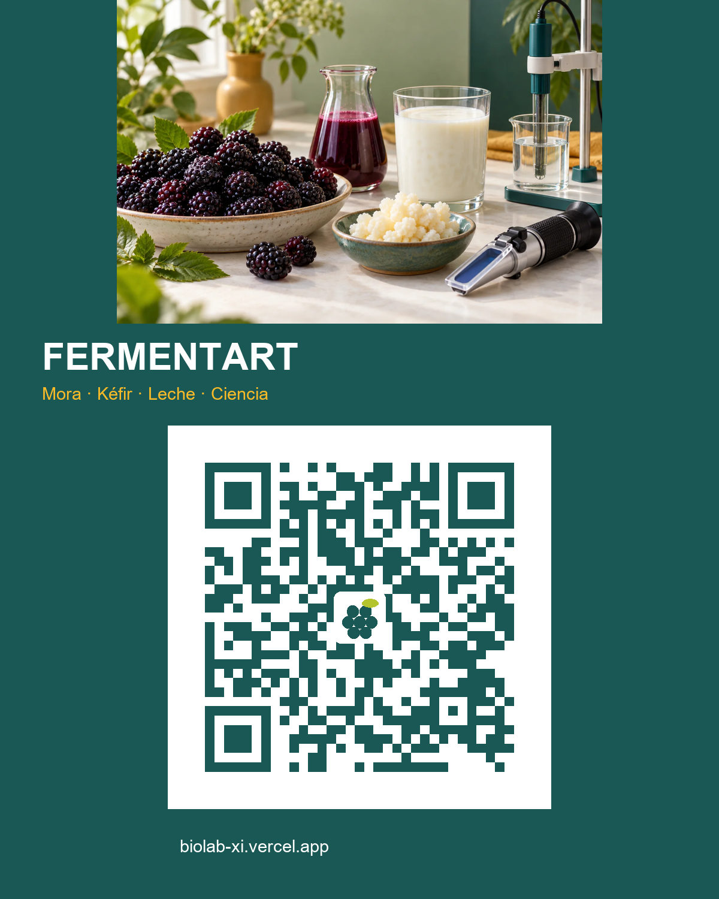

FERMENTART / CIENCIA QUE TRANSFORMA
Lo invisible
también deja
huella.
Una mora. Un grano de kéfir. Un universo de cambios. Descubre qué hacen los microorganismos y pon tus ideas a prueba.
Comienza a explorar4 experiencias · A tu ritmo · Sin laboratorio fÃsico

DEL ALIMENTO A LA CIENCIAFERMENTART EN TU DISPOSITIVO
Escanea y explora.
Abre BioLab en tu celular para descubrir la ciencia de los alimentos.
biolab-xi.vercel.appEl QR abre la versión pública disponible.
Descargar QR para imprimir

01 / CONECTA LAS IDEAS
Pequeños organismos.
Grandes transformaciones.
Fermentar es transformar moléculas para mantener activo el metabolismo. Las enzimas de los microorganismos participan en rutas que cambian azúcares en otros compuestos.
Elige un paso para descubrir la conexión.
02 / APRENDE EXPLORANDO
¿Qué quieres descubrir hoy?
Observa. Predice. Experimenta. Explica.
Reto extra · ¿Una cifra basta para sacar una conclusión?
FermentArt presenta 9 °Brix para mora, pero otro ejemplo utiliza 14 °Brix y menciona maracuyá. ¿Qué harÃas antes de comparar?
Masa y volumen tampoco son intercambiables: 500 g y 1500 mL describen magnitudes distintas. Una unidad dudosa como «200 litro» requiere revisar la fuente, no corregirla por intuición.
03 / LABORATORIO VIRTUAL
Tu siguiente pregunta
empieza con un cambio.
Entra directamente, cambia una variable y compara dos escenarios.
Explora con seguridad. Los resultados son simulados, no mediciones ni instrucciones de elaboración. No manipules ni pruebes muestras por cuenta propia; toda práctica fÃsica requiere supervisión docente y protocolos institucionales.
Fuentes, supuestos y créditos
Referencia educativa: FermentArt vf 2026, presentación aportada por el docente. La mora y el kéfir conectan sus temas con esta experiencia. La coagulación es un fenómeno distinto y se conserva como comparación.
Los modelos simplifican cultivos, materias primas y condiciones. Sus parámetros no están validados para predecir un alimento real. Las escalas temporales ilustran tendencias y no son protocolos de producción.
Lecturas complementarias: OpenStax: fermentación; Estudio de bacterias y levaduras en consorcios de kéfir; referencias experimentales de kéfir.
Identidad: Manual de comunicaciones y mercadeo V7, páginas 23 y 33. Escudo institucional del sitio CEITTO. Portada generada con IA; diagramas originales esquemáticos, sin escala microscópica. No se atribuyen beneficios de salud a estos modelos.